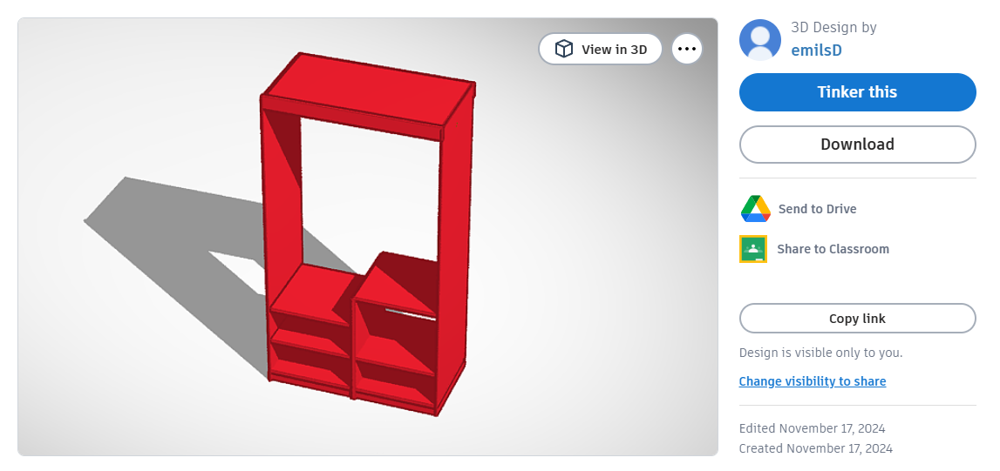

Mans datorikas portfolio
Emīls Dakulis 10.e
Šajā portfolio pastāstīšu un parādīšu, ko mācījos 2024./2025. mācību gadā datorikā pie skolotājas Aijas Lūses. Šī gada pirmā stunda notika sestajā septembrī un kopš tās mēs paspējām apgūt vairākas tēmas.
Teksta apstrāde
Tekstapstādei esmu iemācījies izmantot WORD. Protu darīt visu, ko vajag manām vajadzībām.

Attēlu izstrāde
Rastrgrafika
Rastrgrafikas ziņā esmu mācījies izmantot rastra grafikas redaktoru GIMP, sanāca arī uztaisīt GIF.

Vektorgrafika
Vektorgrafikai esmu mācījies izmantot Inkscape, ko, manuprāt, apguvu vidēji. Biju taisījis logo mūsu grupai, bet mūsu grupa izvēlējās izmantot citu logo. Šo iemeslu dēļ man nav saglabājies attēls ar to logo, tāpēc lūk ir bēdīga sejiņa:
:(
Izklājlapas
Izklājlapu ziņā esmu mācījies izmantot EXCEL, ko, ar specifiskiem palīglīdzekļiem, protu bez problēmām lietot.

3D modelēšana
Specifisku apstākļu dēļ, 3D kuba skaldnes attēla man nav, bet biju izmantojis Tinkercad kā palīglīdzekli jauna skapja projektēšanai un iznāca man kaut kas sekojošs:

Video
Apguvu kā apstrādāt video, man tas process patika, un es, ja būtu pietiekami liels entuziasms, varētu izveidot sev vajadzīgu video arī citām vajadzībām.